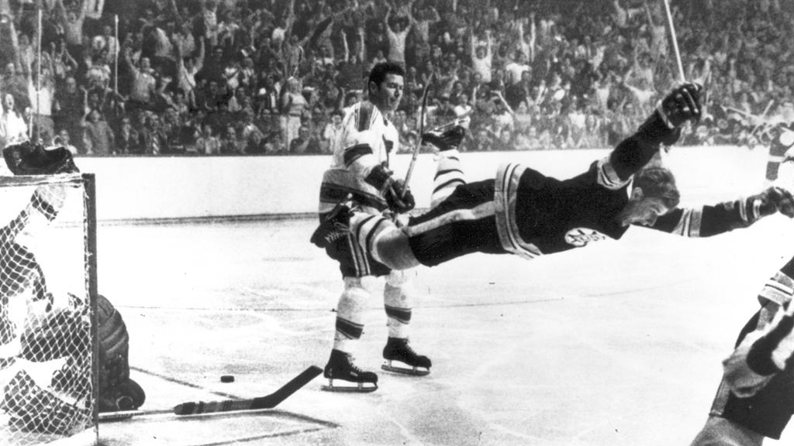
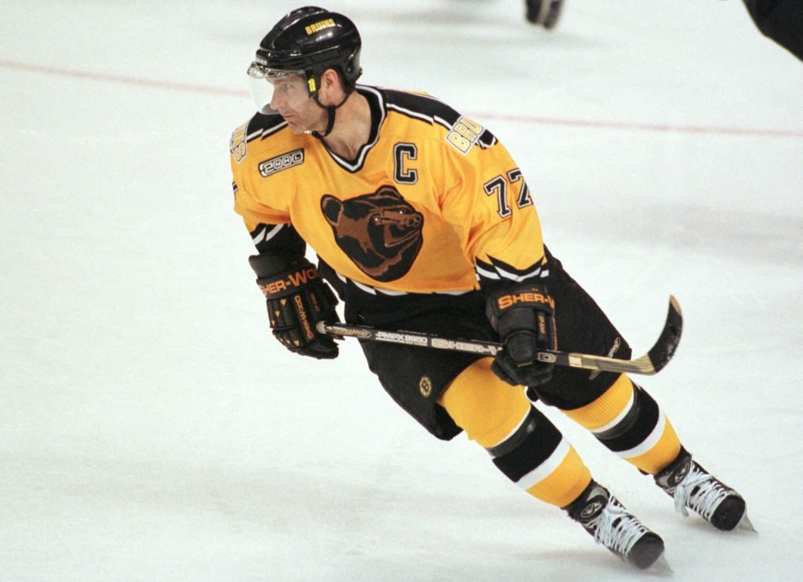
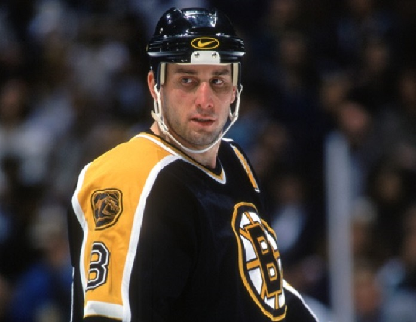
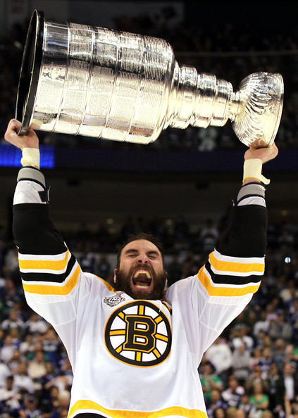

Considered one of the greatest hockey players of all-time, Bobby Orr spent 10 seasons with the Bruins, led them to eight consecutive playoff appearences and 2 Stanley Cups. He won the Norris Trophy as the best defenseman 8 times and won 3 MVP's in a row from 1970-1972. He was inducted into the Hockey Hall of Fame in 1979, which made him the youngest inductee ever.

Also considered one of the greatest defenseman ever, Ray Bourque played 21 seasons with the Bruins from 1979-2000. He won the Norris Trophy 5 times in 1987, 1988, 1990, 1991, and 1994. He made 19 All-Star teams. He finished with 410 goals and 1,169 assists for a total of 1,579 points, which is the most all time by a defenseman. He was elected to the Hockey Hall of Fame in 2004.

Cam Neely played 10 seasons with the Bruins and 13 seasons overall. He finished with 395 goals and 299 assists for 694 points in his career. He was elected to the Hockey Hall of Fame in 2005. He now serves as the Bruins president since 2010.

Zdeno Chara played with the Bruins for 14 seasons, serving as captain for every year he was there. He is currently the oldest active player in the NHL at age 45 playing with the New York Islanders. He has played a total of 1608 games in his career with 207 goals and 459 assists for 666 points. He has won the Norris Trophy in 2008-2009 and led the Bruins to their first Stanley Cup in 39 years in 2011.